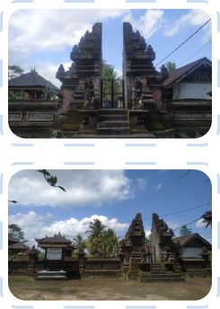

Pura Gelang Agung terletak di Banjar Buangga, Desa Getasan. Desa ini merupakan desa yang secara
administratif termasuk wilayah Kecamatan Petang, Kabupaten Badung. Desa Getasan berbatasan dengan Desa
Pangsan disebelah utara, Desa Carangsari disebelah selatan, Sungai Penet disebelah barat dan Sungai Ayung
disebelah timur. Pura Gelang Agung termasuk ke dalam pura Dang Kahyangan yang merupakan tempat suci yang
dibangun untuk mengenang jasa para pemimpin umat Hindu khususnya Ida Bhatara Dangyhang Dwijendra yang
pernah datang ke Bali. Pura Gelang Agung tercatat pada tanggal 19 April 2011 sebagai situs sejarah dan
sudah menjadi Cagar Budaya, hal ini dikarenakan ditemukannya berbagai macam peninggalan sejarah berupa
uang kepeng, pecahan gerabah kuno, dan struktur bangunan yang terbuat dari batu padas di dalam area pura.
Pura Gelang Agung berjarak 30 Km atau 55 menit waktu tempuh dari kota Denpasar dan 21 Km atau 33 menit
jika ditembuh dari dari Pusat Pemerintahan Kabupaten Badung. Masyarakat atau pemendek yang ingin tanggil
ke Pura Gelang Agung disarankan untuk menghaturkan Banten Pejati.

INFORMASI UMUM
Pura Gelang Agung terletak di Banjar Buangga, Desa Getasan. Desa ini merupakan desa yang secara administratif termasuk wilayah Kecamatan Petang, Kabupaten Badung. Desa Getasan berbatasan dengan Desa Pangsan disebelah utara, Desa Carangsari disebelah selatan, Sungai Penet disebelah barat dan Sungai Ayung disebelah timur..
Baca selengkapnya